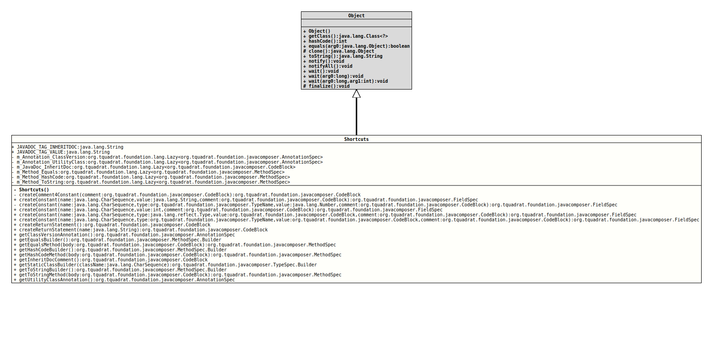

Class Shortcuts
- Author:
- Thomas Thrien (thomas.thrien@tquadrat.org)
- Version:
- $Id: Shortcuts.java 860 2021-01-27 23:08:28Z tquadrat $
- Since:
- 0.0.5
- UML Diagram
-

UML Diagram for "org.tquadrat.foundation.javacomposer.Shortcuts"
{kind=link}
-
Field Summary
FieldsModifier and TypeFieldDescriptionstatic final StringDeprecated, for removal: This API element is subject to removal in a future version.UseJavaComposer.JAVADOC_TAG_INHERITDOCinstead.static final StringDeprecated, for removal: This API element is subject to removal in a future version.UseJavaComposer.JAVADOC_TAG_INHERITDOCinstead.private static final Lazy<AnnotationSpec> Deprecated, for removal: This API element is subject to removal in a future version.The methods from this class were moved toJavaComposer.private static final Lazy<AnnotationSpec> Deprecated, for removal: This API element is subject to removal in a future version.The methods from this class were moved toJavaComposer.Deprecated, for removal: This API element is subject to removal in a future version.The methods from this class were moved toJavaComposer.private static final Lazy<MethodSpec> Deprecated, for removal: This API element is subject to removal in a future version.The methods from this class were moved toJavaComposer.private static final Lazy<MethodSpec> Deprecated, for removal: This API element is subject to removal in a future version.The methods from this class were moved toJavaComposer.private static final Lazy<MethodSpec> Deprecated, for removal: This API element is subject to removal in a future version.The methods from this class were moved toJavaComposer. -
Constructor Summary
ConstructorsModifierConstructorDescriptionprivateDeprecated, for removal: This API element is subject to removal in a future version.No instance allowed for this class. -
Method Summary
Modifier and TypeMethodDescriptionprivate static final CodeBlockcreateComment4Constant(CodeBlock comment) Deprecated, for removal: This API element is subject to removal in a future version.The methods from this class were moved toJavaComposer.static final FieldSpeccreateConstant(CharSequence name, int value, CodeBlock comment) Deprecated, for removal: This API element is subject to removal in a future version.The methods from this class were moved toJavaComposer.static final FieldSpeccreateConstant(CharSequence name, Type type, CodeBlock value, CodeBlock comment) Deprecated, for removal: This API element is subject to removal in a future version.The methods from this class were moved toJavaComposer.static final FieldSpeccreateConstant(CharSequence name, String value, CodeBlock comment) Deprecated, for removal: This API element is subject to removal in a future version.The methods from this class were moved toJavaComposer.private static final FieldSpeccreateConstant(CharSequence name, TypeName type, Number value, CodeBlock comment) Deprecated, for removal: This API element is subject to removal in a future version.The methods from this class were moved toJavaComposer.static final FieldSpeccreateConstant(CharSequence name, TypeName type, CodeBlock value, CodeBlock comment) Deprecated, for removal: This API element is subject to removal in a future version.The methods from this class were moved toJavaComposer.static final CodeBlockDeprecated, for removal: This API element is subject to removal in a future version.The methods from this class were moved toJavaComposer.static final CodeBlockcreateReturnStatement(String name) Deprecated, for removal: This API element is subject to removal in a future version.The methods from this class were moved toJavaComposer.static final AnnotationSpecDeprecated, for removal: This API element is subject to removal in a future version.The methods from this class were moved toJavaComposer.static final MethodSpec.BuilderDeprecated, for removal: This API element is subject to removal in a future version.The methods from this class were moved toJavaComposer.static final MethodSpecgetEqualsMethod(CodeBlock body) Deprecated, for removal: This API element is subject to removal in a future version.The methods from this class were moved toJavaComposer.static final MethodSpec.BuilderDeprecated, for removal: This API element is subject to removal in a future version.The methods from this class were moved toJavaComposer.static final MethodSpecgetHashCodeMethod(CodeBlock body) Deprecated, for removal: This API element is subject to removal in a future version.The methods from this class were moved toJavaComposer.static final CodeBlockDeprecated, for removal: This API element is subject to removal in a future version.The methods from this class were moved toJavaComposer.static final TypeSpec.BuildergetStaticClassBuilder(CharSequence className) Deprecated, for removal: This API element is subject to removal in a future version.The methods from this class were moved toJavaComposer.static final MethodSpec.BuilderDeprecated, for removal: This API element is subject to removal in a future version.The methods from this class were moved toJavaComposer.static final MethodSpecgetToStringMethod(CodeBlock body) Deprecated, for removal: This API element is subject to removal in a future version.The methods from this class were moved toJavaComposer.static final AnnotationSpecDeprecated, for removal: This API element is subject to removal in a future version.The methods from this class were moved toJavaComposer.
-
Field Details
-
JAVADOC_TAG_INHERITDOC
@Deprecated(since="0.2.0", forRemoval=true) @API(status=DEPRECATED, since="0.0.5") public static final String JAVADOC_TAG_INHERITDOCDeprecated, for removal: This API element is subject to removal in a future version.UseJavaComposer.JAVADOC_TAG_INHERITDOCinstead.The Javadoc tag for inherited documentation: "{@inheritDoc}".- See Also:
-
JAVADOC_TAG_VALUE
@Deprecated(since="0.2.0", forRemoval=true) @API(status=DEPRECATED, since="0.0.5") public static final String JAVADOC_TAG_VALUEDeprecated, for removal: This API element is subject to removal in a future version.UseJavaComposer.JAVADOC_TAG_INHERITDOCinstead.The Javadoc tag for a constant value: "{@value}".- See Also:
-
m_Annotation_ClassVersion
@Deprecated(since="0.2.0", forRemoval=true) @API(status=DEPRECATED, since="0.0.5") private static final Lazy<AnnotationSpec> m_Annotation_ClassVersionDeprecated, for removal: This API element is subject to removal in a future version.The methods from this class were moved toJavaComposer.The@ClassVersionannotation. -
m_Annotation_UtilityClass
@Deprecated(since="0.2.0", forRemoval=true) @API(status=DEPRECATED, since="0.1.0") private static final Lazy<AnnotationSpec> m_Annotation_UtilityClassDeprecated, for removal: This API element is subject to removal in a future version.The methods from this class were moved toJavaComposer.The@UtilityClassannotation. -
m_JavaDoc_InheritDoc
@Deprecated(since="0.2.0", forRemoval=true) @API(status=DEPRECATED, since="0.0.5") private static final Lazy<CodeBlock> m_JavaDoc_InheritDocDeprecated, for removal: This API element is subject to removal in a future version.The methods from this class were moved toJavaComposer.The Javadoc comment for an overriding method. -
m_Method_Equals
@Deprecated(since="0.2.0", forRemoval=true) @API(status=DEPRECATED, since="0.0.5") private static final Lazy<MethodSpec> m_Method_EqualsDeprecated, for removal: This API element is subject to removal in a future version.The methods from this class were moved toJavaComposer.A predefinedequals()method. -
m_Method_HashCode
@Deprecated(since="0.2.0", forRemoval=true) @API(status=DEPRECATED, since="0.0.5") private static final Lazy<MethodSpec> m_Method_HashCodeDeprecated, for removal: This API element is subject to removal in a future version.The methods from this class were moved toJavaComposer.A predefinedhashCode()method. -
m_Method_ToString
@Deprecated(since="0.2.0", forRemoval=true) @API(status=DEPRECATED, since="0.0.5") private static final Lazy<MethodSpec> m_Method_ToStringDeprecated, for removal: This API element is subject to removal in a future version.The methods from this class were moved toJavaComposer.A predefinedtoString()method.
-
-
Constructor Details
-
Shortcuts
private Shortcuts()Deprecated, for removal: This API element is subject to removal in a future version.No instance allowed for this class.
-
-
Method Details
-
createComment4Constant
@Deprecated(since="0.2.0", forRemoval=true) @API(status=DEPRECATED, since="0.0.5") private static final CodeBlock createComment4Constant(CodeBlock comment) Deprecated, for removal: This API element is subject to removal in a future version.The methods from this class were moved toJavaComposer.Creates a comment for constant.- Parameters:
comment- The already existing comment; can benull.- Returns:
- The comment for the new constant.
-
createConstant
@Deprecated(since="0.2.0", forRemoval=true) @API(status=DEPRECATED, since="0.0.5") public static final FieldSpec createConstant(CharSequence name, String value, CodeBlock comment) Deprecated, for removal: This API element is subject to removal in a future version.The methods from this class were moved toJavaComposer.Creates a String constant.
A constant is an initialised
public static finalfield.- Parameters:
name- The name of the constant.value- The value of the constant.comment- The description for the constant.- Returns:
- The field spec for the new constant.
-
createConstant
@Deprecated(since="0.2.0", forRemoval=true) @API(status=DEPRECATED, since="0.0.5") private static final FieldSpec createConstant(CharSequence name, TypeName type, Number value, CodeBlock comment) Deprecated, for removal: This API element is subject to removal in a future version.The methods from this class were moved toJavaComposer.Creates a numerical constant.
A constant is an initialised
public static finalfield.- Parameters:
name- The name of the constant.type- The type of the constant.value- The value of the constant.comment- The description for the constant.- Returns:
- The field spec for the new constant.
-
createConstant
@Deprecated(since="0.2.0", forRemoval=true) @API(status=DEPRECATED, since="0.0.5") public static final FieldSpec createConstant(CharSequence name, int value, CodeBlock comment) Deprecated, for removal: This API element is subject to removal in a future version.The methods from this class were moved toJavaComposer.Creates an integer constant.
A constant is an initialised
public static finalfield.- Parameters:
name- The name of the constant.value- The value of the constant.comment- The description for the constant.- Returns:
- The field spec for the new constant.
-
createConstant
@Deprecated(since="0.2.0", forRemoval=true) @API(status=DEPRECATED, since="0.0.5") public static final FieldSpec createConstant(CharSequence name, Type type, CodeBlock value, CodeBlock comment) Deprecated, for removal: This API element is subject to removal in a future version.The methods from this class were moved toJavaComposer.Creates a constant.
A constant is an initialised
public static finalfield.- Parameters:
name- The name of the constant.type- The type of the constant.value- The value of the constant.comment- The description for the constant.- Returns:
- The field spec for the new constant.
-
createConstant
@Deprecated(since="0.2.0", forRemoval=true) @API(status=DEPRECATED, since="0.0.5") public static final FieldSpec createConstant(CharSequence name, TypeName type, CodeBlock value, CodeBlock comment) Deprecated, for removal: This API element is subject to removal in a future version.The methods from this class were moved toJavaComposer.Creates a constant.
A constant is an initialisedpublic final staticfield.- Parameters:
name- The name of the constant.type- The type of the constant.value- The value of the constant.comment- The description for the constant.- Returns:
- The field spec for the new constant.
-
createReturnStatement
@Deprecated(since="0.2.0", forRemoval=true) @API(status=DEPRECATED, since="0.0.5") public static final CodeBlock createReturnStatement()Deprecated, for removal: This API element is subject to removal in a future version.The methods from this class were moved toJavaComposer.Creates a return statement with a comment, usingretValueas the name for the return variable.- Returns:
- The return statement.
-
createReturnStatement
@Deprecated(since="0.2.0", forRemoval=true) @API(status=DEPRECATED, since="0.0.5") public static final CodeBlock createReturnStatement(String name) Deprecated, for removal: This API element is subject to removal in a future version.The methods from this class were moved toJavaComposer.Creates a return statement with a comment.- Parameters:
name- The name of the variable that is returned.- Returns:
- The return statement.
-
getClassVersionAnnotation
@Deprecated(since="0.2.0", forRemoval=true) @API(status=DEPRECATED, since="0.0.5") public static final AnnotationSpec getClassVersionAnnotation()Deprecated, for removal: This API element is subject to removal in a future version.The methods from this class were moved toJavaComposer.Returns a@ClassVersionannotation.- Returns:
- The annotation.
-
getEqualsBuilder
@Deprecated(since="0.2.0", forRemoval=true) @API(status=DEPRECATED, since="0.0.5") public static final MethodSpec.Builder getEqualsBuilder()Deprecated, for removal: This API element is subject to removal in a future version.The methods from this class were moved toJavaComposer.Returns a builder for an implementation of the method
Object.equals(Object)that just needs the method body for completion.The argument has the name "
o".- Returns:
- The method builder.
-
getEqualsMethod
@Deprecated(since="0.2.0", forRemoval=true) @API(status=DEPRECATED, since="0.0.5") public static final MethodSpec getEqualsMethod(CodeBlock body) Deprecated, for removal: This API element is subject to removal in a future version.The methods from this class were moved toJavaComposer.Returns a
MethodSpecinstance for an implementation of the methodObject.equals(Object).The argument has the name "
o".- Parameters:
body- The method body.- Returns:
- The method specification.
-
getHashCodeBuilder
@Deprecated(since="0.2.0", forRemoval=true) @API(status=DEPRECATED, since="0.0.5") public static final MethodSpec.Builder getHashCodeBuilder()Deprecated, for removal: This API element is subject to removal in a future version.The methods from this class were moved toJavaComposer.Returns a builder for an implementation of the methodObject.hashCode()that just needs the method body for completion.- Returns:
- The method builder.
-
getHashCodeMethod
@Deprecated(since="0.2.0", forRemoval=true) @API(status=DEPRECATED, since="0.0.5") public static final MethodSpec getHashCodeMethod(CodeBlock body) Deprecated, for removal: This API element is subject to removal in a future version.The methods from this class were moved toJavaComposer.Returns aMethodSpecinstance for an implementation of the methodObject.hashCode().- Parameters:
body- The method body.- Returns:
- The method specification.
-
getInheritDocComment
@Deprecated(since="0.2.0", forRemoval=true) @API(status=DEPRECATED, since="0.0.5") public static final CodeBlock getInheritDocComment()Deprecated, for removal: This API element is subject to removal in a future version.The methods from this class were moved toJavaComposer.Returns the a code block with a comment for overriding methods:/** * {@inheritDoc} */- Returns:
- The comment.
-
getStaticClassBuilder
@Deprecated(since="0.2.0", forRemoval=true) @API(status=DEPRECATED, since="0.0.5") public static final TypeSpec.Builder getStaticClassBuilder(CharSequence className) Deprecated, for removal: This API element is subject to removal in a future version.The methods from this class were moved toJavaComposer.Returns a builder for a static class.
A static class is a
finalclass with aprivateconstructor that has onlystaticmembers; no instances are allowed for such a class, so none of thestaticmethods are factories for that class.This would be the skeleton for the new static class:
<package what.ever.package.was.chosen>; import org.tquadrat.foundation.annotation.ClassVersion; import org.tquadrat.foundation.annotation.UtilityClass; import org.tquadrat.foundation.exception.PrivateConstructorForStaticClassCalledError; @UtilityClass @ClassVersion(sourceVersion = "Generated with JavaComposer", isGenerated = true) public final class StaticClass { /** * No instance allowed for this class! */ private StaticClass() { throw new PrivateConstructorForStaticClassCalledError( StaticClass.class ); } }- Parameters:
className- The name of the new class.- Returns:
- The builder.
-
getToStringBuilder
@Deprecated(since="0.2.0", forRemoval=true) @API(status=DEPRECATED, since="0.0.5") public static final MethodSpec.Builder getToStringBuilder()Deprecated, for removal: This API element is subject to removal in a future version.The methods from this class were moved toJavaComposer.Returns a builder for an implementation of the methodObject.toString()that just needs the method body for completion.- Returns:
- The method builder.
-
getToStringMethod
@Deprecated(since="0.2.0", forRemoval=true) @API(status=DEPRECATED, since="0.0.5") public static final MethodSpec getToStringMethod(CodeBlock body) Deprecated, for removal: This API element is subject to removal in a future version.The methods from this class were moved toJavaComposer.Returns aMethodSpecinstance for an implementation of the methodObject.toString().- Parameters:
body- The method body.- Returns:
- The method specification.
-
getUtilityClassAnnotation
@Deprecated(since="0.2.0", forRemoval=true) @API(status=DEPRECATED, since="0.1.0") public static final AnnotationSpec getUtilityClassAnnotation()Deprecated, for removal: This API element is subject to removal in a future version.The methods from this class were moved toJavaComposer.Returns a@UtilityClassannotation.- Returns:
- The annotation.
- Since:
- 0.1.0
-
JavaComposer.